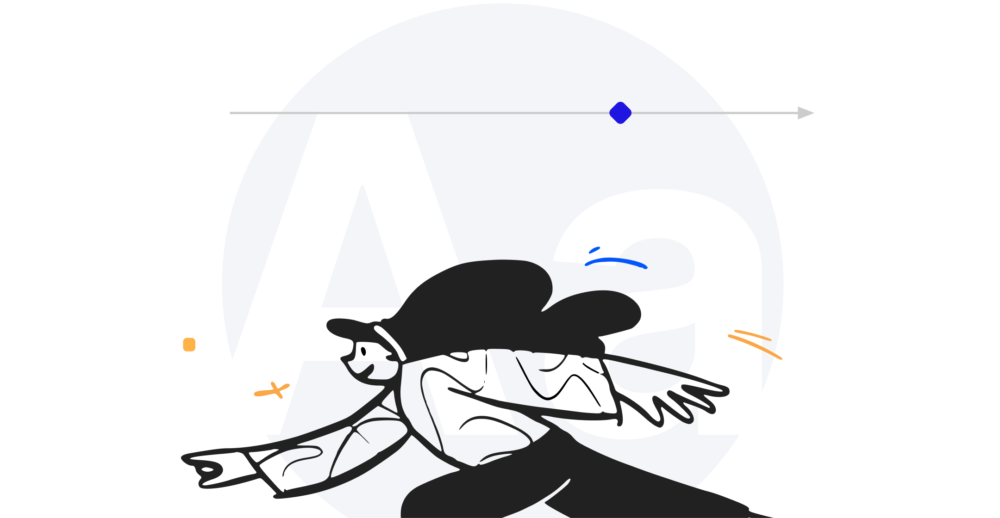
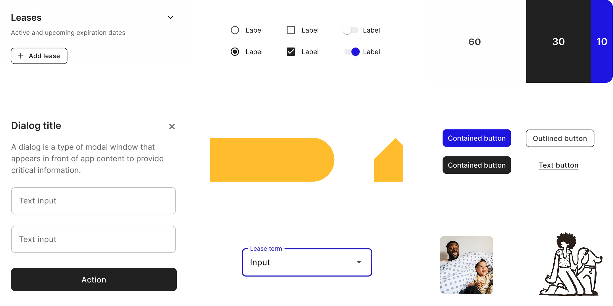
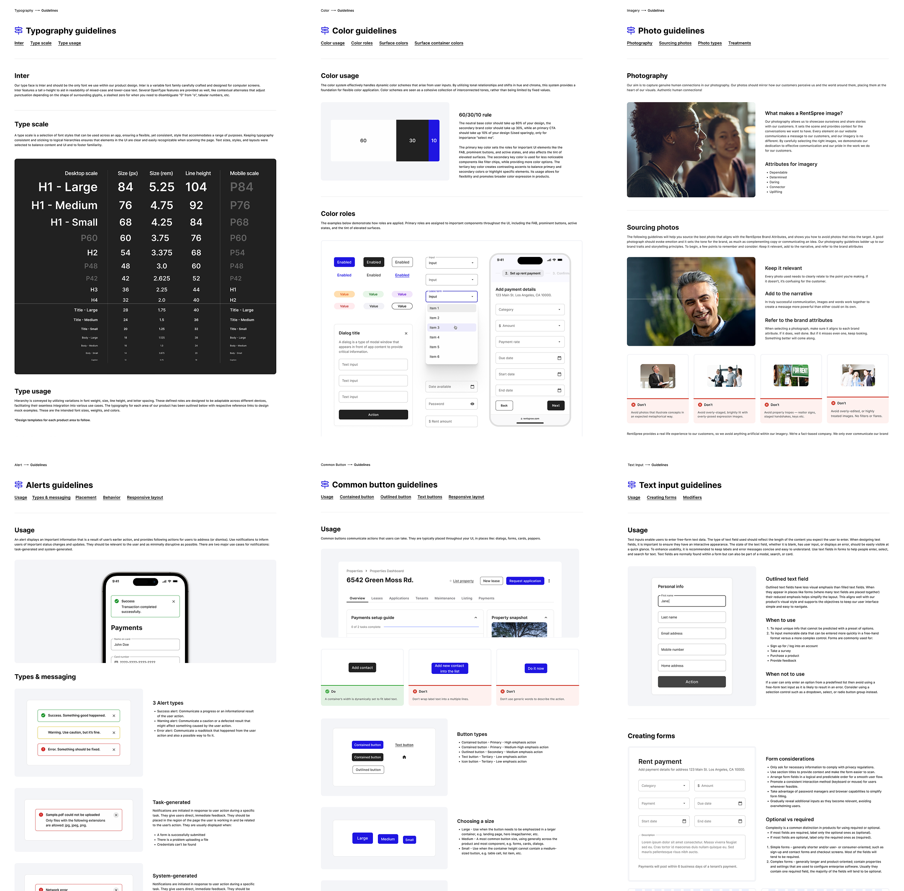
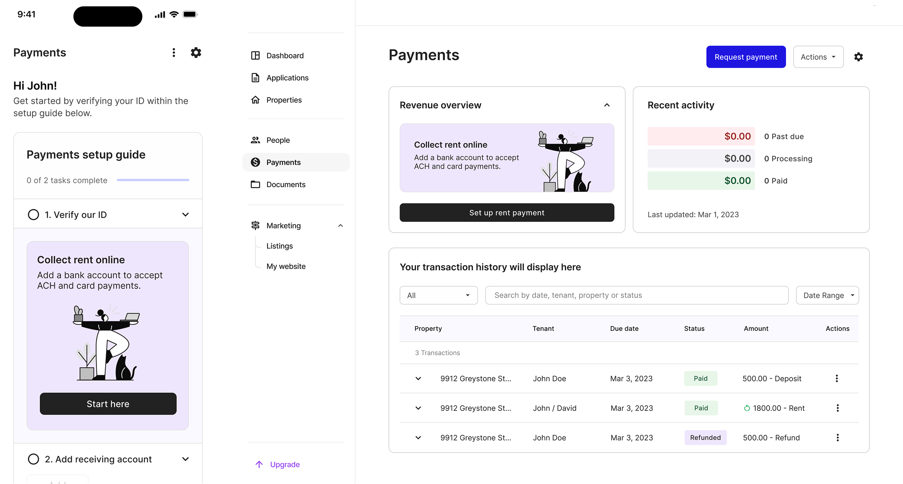

Crafting a design language by creating RentSpree’s DS
User Experience, Visual & Interaction Design, Content Strategy, and Testing.
Full case study
Project Overview
RentSpree connects landlords, agents, and renters, but its previous design system lacked cohesion, slowing consistency, speed to market, and product improvements. Beacon now serves as a clear unified design guide, offering reusable, scalable components that enhance RentSpree’s brand and product experience. The process below described how it came together.

Crafting a solution
The design system strategy focused on building a unified framework that helps teams deliver consistent, user-friendly experiences. By creating a single source of truth for design components and guidelines, it improves collaboration, streamlines workflows, and ensures a cohesive brand across platforms. I prioritized flexibility, accessibility, and efficiency to adapt to user needs while maintaining a professional design. Here is the strategy plan I created as the design lead:
1. Evaluate (Colors, Icons, UI Patterns, Accessibility )
2. Shape vision (Create design language and principles)
3. Create library (Typography, Color Palette, Patterns/Components, Assets)
4. Unify as one (Style & Usage guidance, Component library, Team governance)

Outcome & impact
Beacon created a clear design language that improves user experience with easy-to-use scalable components and guidelines for RentSpree. A governance process was introduced to ensure all elements are functional and user-friendly through UX and Dev reviews. This design system has also increased cross functional collaboration ensuring consistency and an elevated product quality that support RentSpree's goal of simplifying the rental experience for all users.
